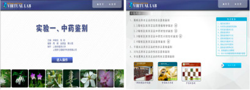
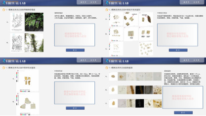
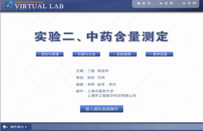
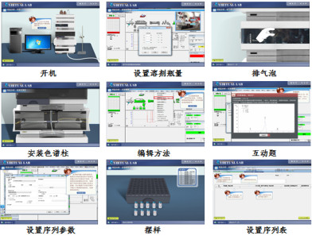
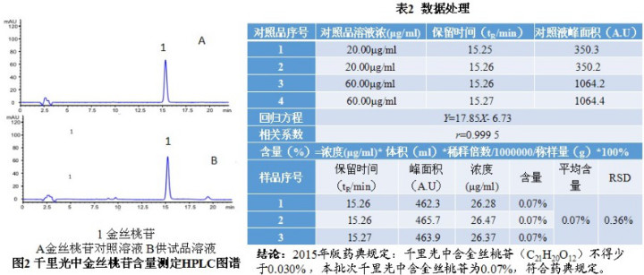
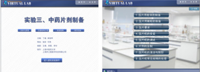
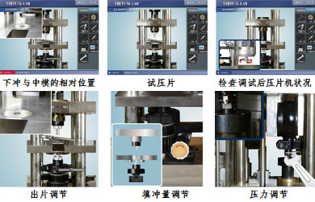
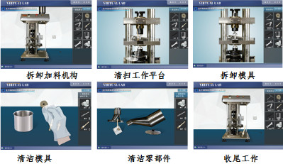
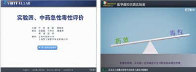
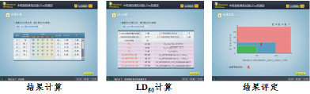

（1）实验方法描述：
实验一、中药鉴别
本实验设计对葛根和千里光进行真伪鉴别，学习中药性状识别和显微鉴别方法。主要内容包括：葛根和粉葛的性状和显微鉴别、千里光及其非正品的性状和显微鉴别等。
实验二、中药含量测定
本实验设计采用高效色谱法测定葛根中葛根素、千里光中金丝桃苷的含量，学习中药中有效成分的含量测定方法，以及液相色谱技术的规范使用。主要内容包括：对照品、供试品溶液的制备、流动相的配制、建立方法与样品分析及数据处理等。
实验三、中药片剂制备
本实验设计将葛根提取物、千里光提取物制备成相应的片剂，学习中药片剂的制备方法，以及单冲压片机的规范使用。主要内容包括：压片用颗粒的制备、压片机的安装与调试、压片操作、压片机的清洁、拆卸及故障处理等。
实验四、中药急性毒性评价
本实验设计进行葛根（无毒）、千里光（具一定毒性）提取物的急性毒性实验研究，学习中药急性毒性的评价方法。主要内容包括：实验动物的选择与分组；将以一定浓度的葛根和千里光提取物按一定剂量给药，使其产生不同的死亡率（正交实验），测定千里光和葛根的LD50（半数致死量）；通过该两种中药LD50的对比，评价不同中药的急性毒性。
（2）学生交互性操作步骤说明：
①步骤1：开始实验前，学生首先进入“中药新药研究虚拟综合性实验”平台 （http://virlab.shutcm.edu.cn/virlab/shzyy/shenbao.html），了解界面中的整体格局和功能模块。

图8. 虚拟实验项目平台主页
实验一、中药鉴别（2学时）
②步骤2： 点击“实验一、中药鉴别”模块，进入虚拟实验平台；点击“进入操作”，进入虚拟实验。（拓展饮片识别等学习，用户名：admin，密码：mengoo2014 ）

图9. “实验一、中药鉴别”虚拟平台首页及其学习界面
③步骤3: 选择一味中药进行真伪鉴别
例1. 葛根饮片及其非正品的真伪鉴别
参考《中国植物志》、《上海市中药饮片炮制规范》，依据2015版《中国药典》一部葛根及其非正品进行药用植物、中药材、中药饮片，性状真伪鉴别；依据2015版《中国药典》一部对葛根及非正品进行显微鉴别。

图10. 葛根饮片的真伪鉴别图
例2. 千里光饮片及其非正品的真伪鉴别
参考《中国植物志》、《上海市中药饮片炮制规范》，依据2015版《中国药典》一部千里光及其非正品进行药用植物、中药材、中药饮片，性状真伪鉴别；依据2015版《中国药典》一部对千里光及非正品进行显微鉴别。

图11. 千里光饮片的真伪鉴别图
④步骤4：点击“相关试题”，进行学习考核。
例3. 葛根、千里光饮片的真伪鉴别相关试题
根据千里光、葛根的真伪鉴别实验内容，进行考核。

图12. 中药材及其非正品真伪鉴别相关试题截图
实验二、中药含量测定（2学时）
⑤ 步骤5：返回项目主页，点击“实验三、中药含量测定”模块。

图13. “实验二”虚拟实验首页
⑥步骤6：点击“进入虚拟实验操作”模块，进入含量测定虚拟实验。

图14. “实验二、中药含量测定”虚拟平台首页及其学习界面
以葛根、千里光为实例，分别应用高效液相色谱法测定葛根中的葛根素、千里光中的金丝桃苷的含量。
步骤6-1：对照品溶液的制备（例16.葛根）
取葛根素对照品适量，精密称定，加30%乙醇制成每1 ml含80 μg的溶液，即得。

图15. （葛根素）对照品溶液配制流程图
步骤6-2：供试品溶液的制备（例17.千里光）
供试品溶液的制备：取千里光粉末（过二号筛）约1 g，精密称定，置具塞锥形瓶中，精密加入75%甲醇25 ml，称定重量，加热回流1小时，放冷，再称定重量，用75%甲醇补足减失的重量，摇匀，滤过，取续滤液，即得。

图16. （千里光）供试品溶液配制流程图
步骤6-3：流动相的配制（例18.葛根）
以甲醇-水（25：75）为流动相，分别采用有机相和水相微孔滤膜进行流动相过滤。

图17. 流动相配制流程图
步骤6-4：建立方法与样品分析（例19.葛根）
以十八烷基硅烷键合硅胶为填充剂；以甲醇-水（25：75）为流动相；检测波长为250nm。理论板数按葛根素峰计算应不低于4000。
测定法：分别精密吸取对照品溶液与供试品溶液各10μl，注入液相色谱仪，测定，即得。

图18. 液相测定的分析方法建立与样品分析流程图
步骤6-5：数据处理（例20.千里光）

图19. （千里光）液相测定结果的数据处理分析
⑦步骤7：评分系统
“高效液相色谱虚拟教学软件”中的自学评分系统根据液相色谱技术的操作要点，按模块设置了100个评分要点，以选择题的形式和学习者互动，使得学习者能在整个学习过程中对知识点的把握程度有一个比较清晰的自我了解，能够更好地督促学习者掌握液相色谱技术。

图20. 高效液相色谱虚拟教学软件中的自学评分系统
实验三、中药片剂制备（2学时）
⑧步骤8：在项目主页中，点击“实验三、中药片剂制备”模块，进入实验首页；点击“进入虚拟实验操作”，进入虚拟实验。

图21. “实验三 中药片剂制备”虚拟平台首页及其学习界面
压片用葛根颗粒及千里光颗粒的制备
步骤8-1：点击“压片用颗粒的制备”
分别称取葛根提取物、千里光提取物，加入适量的微晶纤维素、羧甲基淀粉钠和糊精，混匀，以5%聚维酮（K30）乙醇溶液为粘合剂，湿法制粒，50℃干燥，过24目筛网整粒，再加以适量的硬脂酸镁，即得。

图22. 葛根及千里光颗粒制备流程图
步骤8-2：模具的安装
点击“压片机的安装”
压片机一般有多冲和单冲之分，多冲一般适用于工业化大生产，而单冲一般适用于小批量生产或实验室试制。本虚拟实验学习系统是提供DP-50型单冲压片机的压片过程，主要包括选择合适的模具、安装冲模、通电和压片等过程。

图23. 模具安装流程图
步骤8-3： 压片机的调试
点击“压片机的调试”
正式压片之前必须对其填充量、压片压力以及出片机构进行调整，直至符合压片要求之后，才能压片。

图24. 压片机调试流程图
步骤8-4：片剂的压制
点击“片剂的压制”
最后打开料桶盖，加入压片用颗粒粉末（葛根提取物或千里光提取物），调节转速，即可进行压片。注意在整个压片过程中需随时抽样检测片剂质量，一旦发现片剂质量不符合要求，立即停止压片，对压片机重新进行调试。

图25. 片剂压制流程图
步骤8-5：压片机的清洁与拆卸
点击“压片机的清洁与拆卸”
压片结束后，关闭电源，对压片机各部位进行清洁，然后按照“加料机构-上冲-中模和下冲”的顺序，将压片机各零部件拆卸下来，并对其进行清洁，最后将加料筒安放回压片机上，模具浸没油中保存。

图26. 压片机清洁与拆装流程图
⑨步骤9：压片技术虚拟学习系统自主评分
《单冲压片技术虚拟学习系统》可根据单冲压片技术的操作要点，按模块进行技术要点分解，并以选择题的形式出现在评分系统中与学习者进行互动，虚拟实验结束后，系统将自动对操作者的答题情况进行评分，反映操作者的学习进度和掌握情况。

图27. 单冲压片技术虚拟学习评分系统截图
实验四、中药急性毒性评价（2学时）
⑩步骤10：在项目主页中，点击“实验四、中药急性毒性评价”模块，进入实验首页；点击“进入虚拟实验操作”，进入虚拟实验。

图28. “实验四、中药急性毒性评价”虚拟平台首页及其学习界面
⑪步骤11：动物品系选择及购买药材和动物
提供3种老鼠类型的选择，点击可以切换，选择后点击“下一步”按钮进入下一步操作。购物车界面，进行老鼠和药材的购买。

图29. 动物选购及药材购买界面
⑫步骤12：预试
输入不同剂量进行死亡数统计，确定0及100%死亡率剂量范围（即Dn和Dm）。

图30. Dn及Dm测定的操作界面
⑬步骤13: 正式实验
根据预实验得到的Dn和Dm，自行设计输入剂量比、分组数。系统根据个人设计方案得出各组剂量及不同时间点的死亡数。

图31. 各组剂量及不同时间点的死亡数测定界面
⑭步骤14: 结果计算及评定
根据LD50计算公式套用， 直接得出LD50结果。根据实验动物数量、药物浓度、实验经费等参数，评判为优、良、差。

图32. LD50实验结果及评定界面